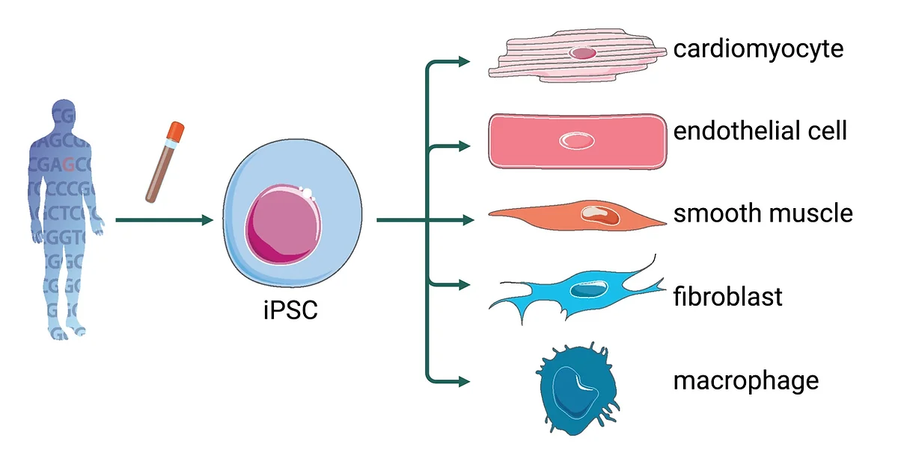
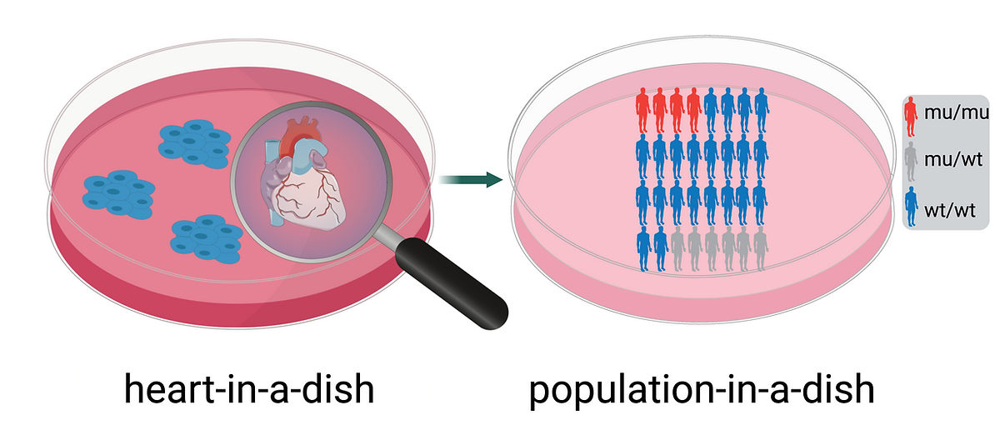

Our Science
At the core of our lab's work are Induced Pluripotent Stem Cells (iPSCs) and CRISPR screening technology. We reprogram cells to repair damaged heart tissue and prevent cardiovascular diseases. Using iPSCs, we create patient-specific models to delve deep into the mysteries of the heart, and with high-throughput CRISPR screening, we identify novel drug targets faster than ever before.

Reprogramming & Differentiation
Developing methods to efficiently generate specific cell types from iPSCs for therapeutic applications.

Disease Modeling
Creating patient-specific models to understand the mechanisms of cardiovascular diseases.

CRISPRi/a Screening
High-throughput functional genomics to identify novel therapeutic targets.

Perturb-seq in Organoid
Combining single-cell sequencing with CRISPR perturbations in 3D organoid models.

Population-in-a-dish
Modeling population-scale genetics and drug responses using iPSC cohorts.